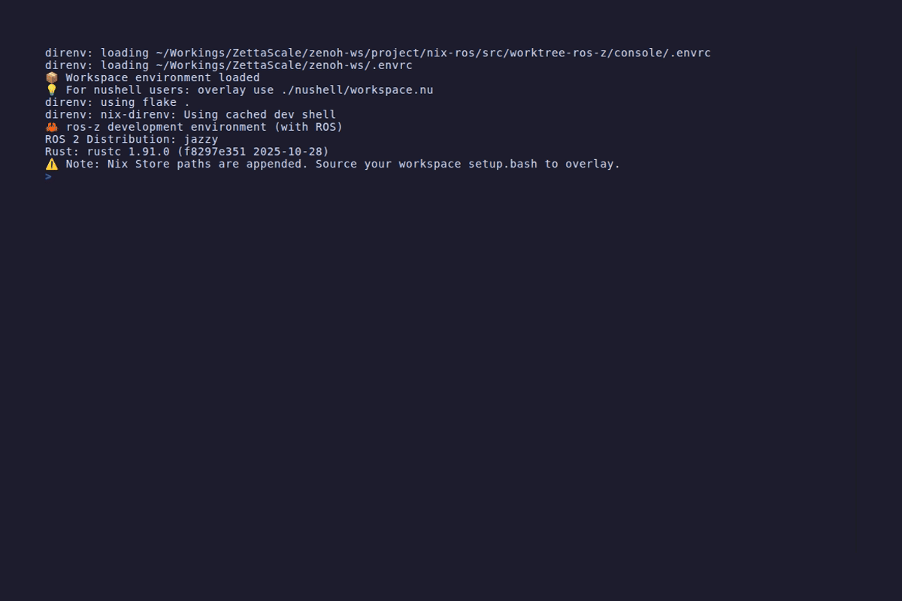
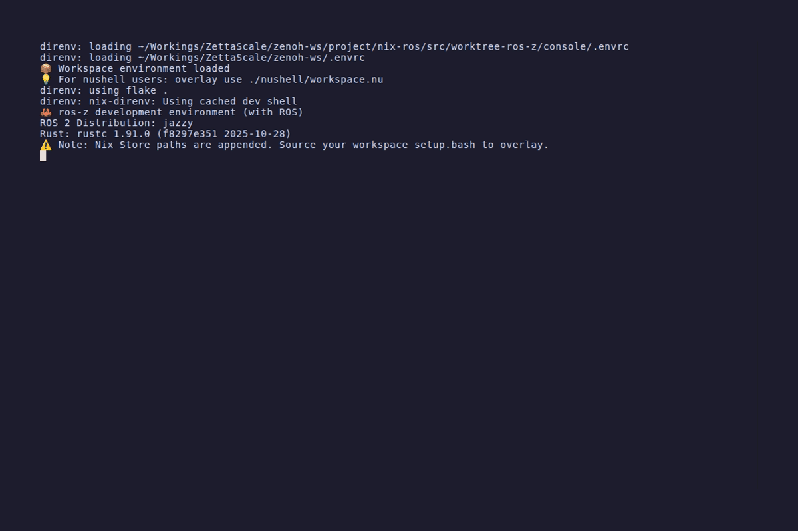

ros-z-console TUI Demos
These demos use the classic z_pubsub (talker/listener) and z_srvcli (AddTwoInts server)
examples as a live ROS 2 system.
Setup:
# Terminal 1
zenohd
# Terminal 2
ros-z-console tcp/127.0.0.1:7447 0
Startup
ros-z-console connects to the Zenoh router and discovers all live entities in the graph.

Topics Panel
The Topics panel (default) lists all active ROS 2 topics with their type and publisher/subscriber counts.
Navigate with j / k (or arrow keys). Press l or Enter to open the detail pane.

Topic Detail
Select a topic and press l or Enter to view publishers, subscribers, type hash, and QoS profiles.

Services Panel
Press 2 (or Tab) to switch to the Services panel. Lists all active ROS 2 services with their type.

Nodes Panel
Press 3 to switch to the Nodes panel. Lists all active nodes. Select a node and press l or Enter
to see its publishers, subscribers, and services.

Rate Measurement
Press r on a selected topic for a quick rate check (cached 30s). Switch to the Measure panel
(4 or m) for a continuous measurement with a 60-second time-series chart.

Filter Mode
Press / to enter filter mode and start typing. The list narrows to matching items in real time.
Press Ctrl+U to clear, Escape to exit filter mode.

Help Overlay
Press ? to toggle the help overlay showing all keybindings.